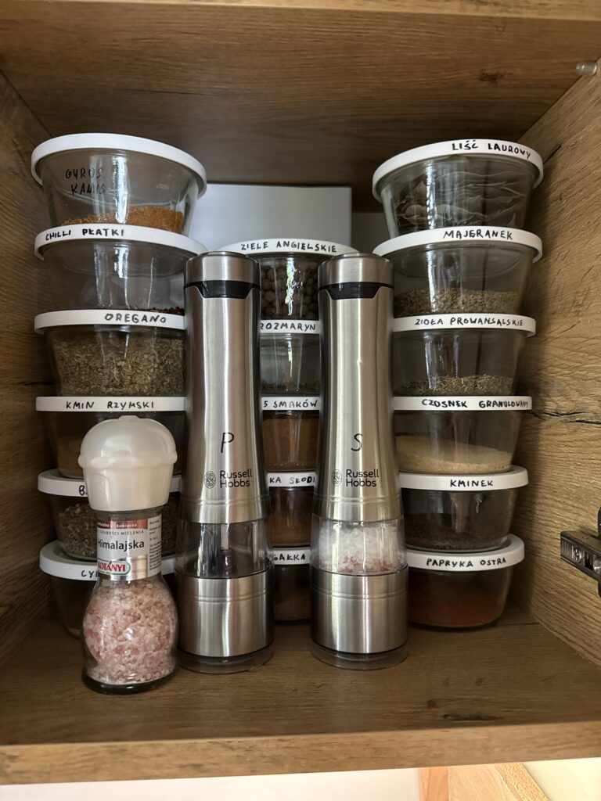
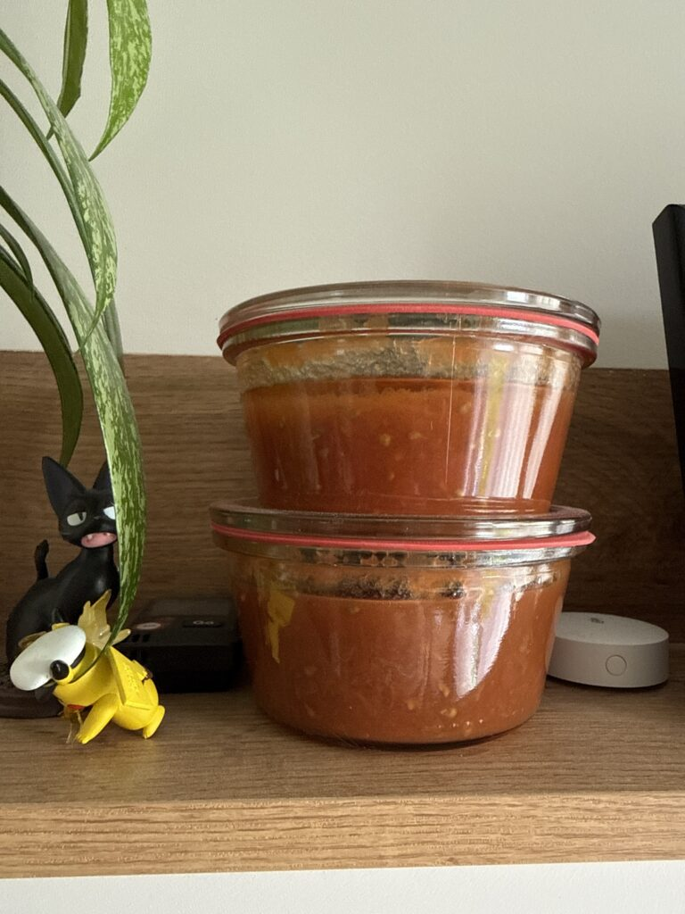
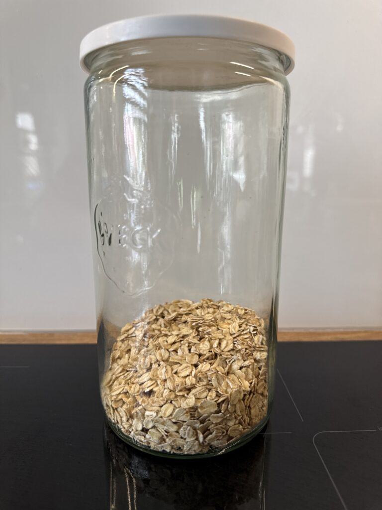

There are some anecdotal reports online about inference endpoints quietly degrading. I will add to those reports, and just like the others I will not publish hard data because of client confidentiality and potential liability (I can’t afford a lawyer).
It’s shocking to what extent business models rely on the customers not being aware of their rights.
GitHub Copilot on GNU/Linux keeps trying to use sudo and failing, needs specific instructions to use a workflow of scripts run by the user using sudo.
GitHub Copilot on Windows has no issues elevating a Powershell session and triggering a UAC prompt to be accepted by the user manually.
Using gsudo on Windows in combination with explicit ask permission gives better visibility into what the agent is trying to run in an elevated way.
The amount of liability issues surrounding LLMs makes me wonder. We either have an epidemic of responsibility avoidance in our society or there’s something seriously wrong with my mental model of the world.
I keep trying to bring economies of scale into my household.
Weck jars mean standardization. All my jars now have 100mm mouths. I have one kind of lids that fits any jar in my house.
No more rust. No more guessing which lids will survive the water bath and which will vent. No more lids that almost fit.
These jars are an investment. They are much more expensive than the standard European/Polish twist-off jars. I’m going to test their longevity and see how many seasons they last for my family.



LLMs bring a shift in the level of abstraction. It means productivity and convenience, but also requires reorganizing the thinking about the systems that we build.
We have to recalibrate the memory filters in our brains. The technical details that were marginally worth remembering before are a liability now.
Having your LLM agent prepare a document for you is really powerful. How can it be done effectively and without locking your data in a single corporate silo?
This results in some financial considerations. It seems like the behavioral/workflow implications are more important. And they might be the exact reason why the billing models differ.
My prediction about how the internet will change: sustems of reputation and liability will have to be introduced at scale, on an individual link (ISP contract) level. This was always inevitable, LLMs just massively sped that up.
Using proprietary LLMs feels like walking on quicksand. System prompts change. Quantizations change. Snapshots change. It’s hard to build a workflow around any model these days. It’s hard to commit to anything.
My big hope around locally hosted models potentially catching up with the proprietary ones is that we might finally be able to freeze something so that we can experiment with it.
To anyone still thinking that Microsoft’s open source and Linux push of 2010s was anything other than the “Embrace” phase all over again, this is how my screen looks like after I try to az login into my Azure tenant:
I used to dismiss WordPress as an easy learning curve tool for the normies. The last time I used a similar CMS was 10 years ago, when creating some small websites using Joomla.
I recently started using WordPress for this blog, and the level of polish of the management inferface (including mobile support) is astonishing. I’m talking about rock solid async communication, editor backups in browser’s local storage, brilliant responsive content editor experience, proper support for iOS’s native media pickers during upload.
I’m hosting a WordPress container in my home lab. A scheduled script mirrors the site with wget and pushes the results to a GitHub Pages repository with a custom domain configured.
Oh, how heated is the war for our eyeballs. It becomes apparent only once you try to exert real control over what information reaches you. The kernel-level DRM for video. The websites refusing to present text unless displayed on a device supporting JavaScript fingerprinting and tracking. The “share” boxes popping up when you try to take a screenshot, if you are even allowed to take one. The prevalence and intrusiveness of the “use our app” pop-ups.
There are ads in the git commits now, put there by GitHub Copilot. They are in Ubuntu Server’s default MOTD, put there by Canonical. There are even ads in build warnings now.
Fridge serving ads is one thing. I have full control over the kind of fridge I use at home. Hell, it would probably be possible to not even HAVE a fridge these days. The tools of the trade I use professionally, however, are a different story. It’s much harder to escape enshittification there.
Some reasons why I still use Windows:
– mirroring development setup of other people working on the same codebases as me saves a lot of time; I can’t afford to be the only one on the team who has to spend an additional day setting up Azure auth on Linux because nobody else around me did that before
– the market puts a lot of pressure on Microsoft to maintain backwards compatibility: the prime enshittification prevention measure.
I don’t think the solution to cybersecurity dangers in the age of AI is increasing interconnectedness and decreasing time-to-ship-cve-fixes. Eventually we will HAVE TO start decreasing the attack surface (amount of code in production) and introducing artificial hermetization at a larger scale than we do now (VPNs, IP whitelisting, other infrastructural security measures).
Personally, I already don’t trust the amount of code I have running in my home lab to be secure enough to withstand having the TCP/UDP ports open to the world (or even to a single country). Like most people, I’m using a VPN. A single point of failure, much smaller attack surface.
I tested OpenVPN on my Mikrotik. iOS as client. Battery of my iPhone went down 40% in one night because I forgot to turn off the VPN.
No such issues with Wireguard. Layer 2 connectivity is sacrificed, but you can literally feel the performance difference when browsing the internet or accessing local services on the smartphone. There’s also no noticeable battery drain on my devices.
Librechat is much more stable than Openwebui. I tried using Openwebui precisely because I don’t want inference to stop when I change the app on my iPhone, and it totally failed me in that regard.
Allegro takes the side of the seller when pointing the customer to the carrier’s complaint form in cases where the packaging is damaged (a judgement expected to be made by the customer). The responsibility for the shipping lies on the seller’s side as long as the selller had influence over the carrier choice (AFAIK alwyas the case in Allegro). See UOKIK’s commentary here.
Radical is better than Baikal for self hosting personal calendar for CalDav use.
By default, Librechat uses Sonnet 4.5 to generate chat titles. It’s unhinged.
I really like the natural scrollback I get in the terminal when using Pi coding agent. It’s frustrating when I run Copilot or Claude Code through iSH and tmux on my iPhone and I can’t read responses spanning more than a single smartphone screen.
I recently had a dispute with a business selling products on Allegro. They refused to refund full price after I sent back the product. They claimed that my unpacking of the product to test it made it lose almost all its value because it would be difficult to resell.
The customer ombudsman sided with me. So did the Allegro Buyer Protection programme, subsequently refunding me money. I’m still not fully satisfied – Allegro told the seller they were not expected to reimburse the money themselves.
Librechat requires scraper and reranker configured in addition to SearXNG before the “web” tool is presented to the LLM. I understand the reasoning behind it but I think it should be the administrator’s choice if they want to only use SearXNG.
I went around this limitation by exposing SearXNG via MCP. One problem I’m having is that the context window fills very quickly when an agentic model like GLM-5 uses the search and URL read tools. I’m not sure if this problem happens with the “official” web tool in Librechat.
Grok 4.1 Fast seems too good at following my custom system prompts. Its abbreviation skills are impressive.
I finally understood why a Victorinox kitchen knife feels better than an OLFA blade when unpacking boxes. It’s because of the rigidity of the blade. It means better control.
I understood it after testing three different baby spoons. It’s easier to scrape the leftover soup off the baby’s chin with a long rigid spoon than with a short spoon that bends.
The main selling point of the iPhone 16 Pro Max for me was the Action Button. I was happy I would be able to turn on flashlight with a single button.
Alas, this does not work with my settings. I suspsect the disabled “raise to wake” feature. The button does not wake up the smartphone and it simply doesn’t work until I click the power button first.
Once again I am reminded that this is not my smartphone. Cupertino will decide when the screen is on and when it’s not.
The reason why I trust a doctor to operate on me is not that I know him personally or did a deep analysis of his past performance. It’s the system around him that makes sure he will be personally responsible for any issues caused by the surgery.
An architect can charge a hefty premium if they commit to supervising the actual construction work and not just designing a building. The value the customer gets is a single point of contact in case of any issues, a single contract, a single entity responsible for the quality of the work.
Perhaps what most people sell is not as much the service they perform as the liability transfer. This might be the reason why AI will struggle to replace humans. Big Tech will never take responsibility for the actions of an LLM (see the hilarious clauses in Claude Code or Github Copilot ToS).
The optimistic vision is that this means the LLMs will usher in a future where rent seeking and responsibility avoidance are much more difficult than they are today. I’m looking forward to increased accountability in our society.
Desperation displays are fatal in courtship. The other side treats them as a heuristic for your self-perceived “dating market” value. Unbalanced relationships are often toxic and to be avoided.
Once again, the middle way wins. Communicate affection and warmth without seeming too eager to “close the deal”.
As this site is now hosted on Github Pages, there is a limit of 1 GB of total storage size. Realistically it would take a looong time for me to reach that limit, but it’s good practice to compress your stuff properly anyway. Fetching an 800kb image as part of the site load is annoying.
Recently I was migrating my posts off a site hosted on Azure. I had barely started and the old site started suddenly returning 403s. It turned out the temorary subscription I had been using was disabled. For various reasons it would be a huge hassle to re-enable it right now. And, obviously, I had no proper backup of the site. I guess I had figured “if it’s in the cloud, it probably won’t get lost”. Sure enough, you can’t export App engine’s data from Azure after its subscription has expired. I searched through my external hard drive and my other laptop and didn’t find a backup of the site.
I’ve been on a vacation. Not anymore. I came to the office, greeted my co-workers, turned on my laptop. There seemed to be an update, but I’m already used to seeing those at random moments. What I’m not used to seeing, however, is software I have never installed popping up in the foreground.
Around six years ago, I had a pair of AKG headphones – the K512 MKII. The audio quality was sufficiently good, but my ears aren’t picky – to me, much more important pros of those headphones were the weight and breathability. After the AKGs wore off, I got a pair of Sennheiser HD 518s and used it as my main desktop headset for several years.
I wanted to customize the theme my old website was using. I needed to have my own fork and I didn’t want to modify the compiled SASS styles directly. In the original repo, though, there were no instructions on how the styles have been compiled in the first place.
How come Facebook functions perfectly well with no JS? I can read and send messages, even ones with images, I can browse posts, groups, heck, I can even play videos if I can be arsed to disable NoScript for each of them individually. All this buttery smooth, no slow, incremental loading of pages, no single-page-application navigation bullshit. What about some other sites? Maybe I’ve been a slave to JS with no reason for all those years?
In this article I focus on the first layer of the TCP/IP network model, specifically the Ethernet standard. I will build a small simulated network and explore the frame flow through networking and end devices along with the protocols making the communication in the Network Access Layer possible. You can read a quick summary of the TCP/IP network model here and get an overview of the more extensive OSI model here. The software you can use to recreate the examples presented here by yourself is Cisco Packet Tracer. It is available for free for the Cisco Networking Academy members (the registration is a free process as well).